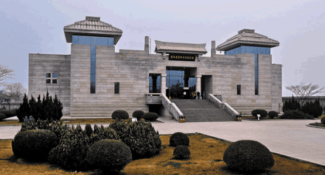

兵马俑，即秦始皇兵马俑，亦简称秦兵马俑或秦俑，第一批全国重点文物保护单位，第一批中国世界遗产，位于今陕西省西安市临潼区秦始皇陵以东1.5千米处的兵马俑坑内。
华清池，又名华清宫，包括原骊山国家森林公园，与颐和园、圆明园、承德避暑山庄并称为中国四大皇家园林。华清宫，西距西安30公里，南依骊山，北面渭水，与“世界第八大奇迹”兵马俑相邻。为国家首批5A级旅游景区、全国重点风景名胜区、全国重点文物保护单位、国家级文化产业示范基地、国家地质森林公园。周、秦、汉、隋、唐等历代帝王在此建有离宫别苑。因其亘古不变的温泉资源、烽火戏诸侯的历史典故、唐明皇与杨贵妃的爱情故事、“西安事变”发生地而享誉海内外，成为中国唐宫文化旅游标志性景区。
骊山是秦岭山脉的一个支脉，海拔1302米，是秦岭晚期上升形成的突兀在渭河裂陷带内的一个孤立的地垒式断块山。 骊山是华清宫景区的重要组成部分。山上文物胜迹众多、自然景观秀丽，遍布着烽火台、老母殿、老君殿、晚照亭、兵谏亭、上善湖、七夕桥、尚德苑、遇仙桥、三元洞等众多著名景点。
秦始皇陵是中国历史上第一位皇帝嬴政（前259—前210年）的陵寝，中国第一批世界文化遗产、第一批全国重点文物保护单位、第一批国家AAAA级旅游景区，位于陕西省西安市临潼区城东5公里处的骊山北麓。
